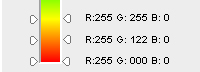
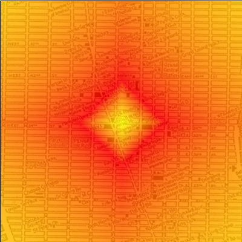

Bonjour à tous ! Je vais vous présenter dans ce tutoriel le profilage géographique.
Le profilage géographique est une technique notamment utilisée par la police pour retrouver des serial killers. Ce qu'elle a d'intéressant, c'est qu'elle met en évidence la manière dont trois branches paraissant plus ou moins éloignées sont utilisées de concert dans un même but. En effet, le profilage géographique est un excellent exemple montrant comment les sciences humaines, les mathématiques et l'informatique s'unissent pour combattre un ennemi commun (ou pas) : les serial killers.
Nous commencerons par voir comment fonctionne le profilage géographique en théorie, puis nous analyserons en détail les mathématiques qui se cachent derrière. Et finalement, nous coderons nous-mêmes un programme de profilage géographique avec ces connaissances nouvellement acquises.
Du côté des prérequis pour la partie mathématique, il n'y a rien de bien compliqué, mais ce n'est pas extrêmement simple non plus. Je m'efforcerai bien entendu d'être le plus clair possible, mais il faut quand même connaître quelques bases, telles que le théorème de Pythagore, les fractions, la règle de trois etc.
Alors, vous êtes prêts à chasser des serial killers ? J'espère que vous êtes bien armés, car ils sont dangereux ! :pirate:
Le profilage géographique est une technique développée dans les années 90 par Kim Rossmo, un mathématicien policier. Il est le premier à avoir eu une approche différente dans les enquêtes concernant les serial killers. En effet, les mathématiciens criminologues de l'époque essayaient de créer un modèle mathématique qui leur permettrait de déterminer le lieu du prochain crime d'un serial killer. Mais Rossmo a très vite compris que cette idée était quasiment irréalisable, car il y avait trop de variables en jeu. Il eut alors l'idée de faire la démarche contraire : plutôt que d'essayer de prédire le lieu du prochain crime, il a cherché à trouver le lieu de résidence du criminel.
Le jet d'arrosage
Jet d'arrosage Pour illustrer cette idée, on emploie souvent la métaphore du jet d'arrosage. En effet, il est impossible de savoir où va tomber chaque goutte d'eau du jet. Il est aussi impossible de prédire l'endroit où le tueur va commettre son prochain crime. En revanche, en analysant le motif formé par les gouttes d'eau, il est possible de déterminer leur origine. C'est ce que l'on fait lorsque l'on effectue le profilage géographique d'un serial killer. ViaVia les coordonnées géographiques de chacun de ses crimes, on essaie de déterminer l'endroit où il habite. Cette technique fonctionne très bien : des analyses comportementales ont prouvé que les serial killers ont une prédisposition à commettre leurs crimes près de chez eux, mais pas trop près non plus (nous y reviendrons). Ainsi, en général, plus on s'éloigne du lieu du crime, plus la probabilité qu'il s'agisse de la zone de résidence du criminel diminue.
L'être humain et l'aléatoire : une grande histoire d'amour
Un autre problème avec les humains, qui nous arrange bien dans ce cas, est la difficulté qu'ils rencontrent à imiter l'aléatoire. ^^ En effet, les serial killers ont tendance à chercher à commettre leurs crimes de manière aléatoire pour tromper la police. Mais ils vont ainsi créer un motif uniforme (à l'instar des gouttes d'eau autour du jet), qui sera tout sauf aléatoire. Il est donc relativement facile de créer un modèle mathématique qui permettra de situer le lieu de résidence du criminel à partir du motif formé par les lieux des crimes.
Observez ces deux images illustrant mes propos. Si je demande à une personne quelconque de dessiner des points de manière aléatoire, il y a énormément de chances qu'elle me dessine quelque chose ressemblant à l'image de gauche. Mais un œil un peu critique remarquera très vite que cela n'a rien à voir avec de l'aléatoire. Une meilleure simulation de l'aléatoire, que l'on pourrait qualifier d'« aléatoire naturel », est quelque chose qui ressemblerait plutôt à l'image de droite.
Maintenant que nous avons compris l'idée qui se cache derrière le profilage géographique, analysons son aspect un peu plus mathématique.
Rigel
Je disais donc que, pour parvenir à calculer le lieu de résidence du serial killer, Rossmo a développé une unique formule (la Formule de Rossmo), qui permet de calculer la probabilité que le tueur en série habite dans une certaine zone de la région concernée par les meurtres.
Bref, la formule va ainsi nous permettre de modéliser le comportement du serial killer en appliquant ce que l'on sait sur son mode opératoire (abrégé aussi M.O. pour modus operandi en latin).
Une fois que ce profil a été déterminé, il ne reste plus au policier qu'à entrer les coordonnées des crimes dans un logiciel, ainsi que les autres informations sur le profil du serial killer (vous verrez de quoi je parle plus tard). Le programme s'occupera de calculer les probabilités sur une carte et coloriera les différentes valeurs de probabilités en une certaine couleur. Le logiciel en question s'appelle Rigel et est utilisé partout dans le monde.
Sur l'image ci-dessous, nous pouvons observer un exemple de profil géographique (les zones en rouge représentant des régions à forte probabilité, tandis que les secteurs violets sont moins probables).
Exemple de profilage géographique
Bien entendu, ce qui nous intéresse est de savoir comment fonctionne ce programme ! …quoi, pas vous ? :euh:
Fonctionnement général de la formule
Nous abordons ici la partie difficile. Nous allons essayer de comprendre la Formule de Rossmo, qui permet d'afficher un profil géographique sur une carte. Âmes sensibles, s'abstenir, car ça pique les yeux. o_O
Ne vous inquiétez pas, nous allons découvrir ensemble la signification de cette belle formule. Néanmoins, pour les personnes plus expérimentées, voici un court descriptif des symboles.
p_{i,j}\in\mathbb{R} : probabilité p que le tueur réside à la coordonnée (i;j).
c\in\mathbb{N} : nombre de crimes.
X_i,Y_j\in\mathbb{N} : position du point de coordonnées (i;j).
x_n,y_n\in\mathbb{N} : coordonnées du crime n.
f\in\mathbb{R} : accentue (f>0) ou diminue (f<0) l'effet « plus on s'éloigne, plus la probabilité baisse ».
g\in\mathbb{R} : accentue (g>0) ou diminue (g<0) l'effet de « zone tampon ».
Examinons à présent cette formule de façon plus détaillée. En premier lieu, imaginons la carte quadrillée d'une région :
Carte
Vous remarquez que chaque carré est défini par les coordonnées i et j. La formule va en fait calculer pour chaque petit carré un à un (carré qui sera, pour rappel, un pixel en réalité) la probabilité que le tueur y réside. La grosse formule que vous voyez ci-dessus devra dès lors être appliquée à l'ensemble des carrés de notre carte ! :o C'est pour cela qu'elle contient p_{i,j}. Cela peut se traduire par : « la probabilité p que le tueur réside dans le carré de coordonnées i et j ». (Il est pas beau, le pouvoir qu'ont les maths de traduire une phrase en 3 symboles ? :lol: )
Observons donc par quel moyen la formule calcule cette probabilité. Tout d'abord, vous voyez ceci :
p_{i,j} = \sum_{n=1}^{c} \left [ ... ight ]
Le symbole \Sigma est la lettre grecque sigma (majuscule) et signifie en mathématiques « faire une somme de tout ce qui se trouve entre crochets ». En fait, pour comprendre comment ça marche, sachez que le fonctionnement est similaire à une boucle en programmation. La lettre que vous apercevez sous le sigma est la variable (ici, c'est la lettre n). Cette variable va s'incrémenter à chaque tour de boucle, la valeur de départ étant la valeur indiquée sous le sigma (ici 1). La somme s'arrêtera lorsque n sera égal au nombre indiqué au-dessus du sigma (la lettre c).
Voici un rapide exemple pour que vous compreniez. Si l'on écrit :
\sum_{n=1}^{10} n
Cela signifie simplement : « faire la somme de 1 + 2 + 3 + ... + 10 ». Ou, si vous préférez, en voici l'équivalent en C++ (c'est quasiment pareil pour la majorité des langages de programmation) :
int resultat = 0;
for(int n=1; n<=10; n++)
resultat+=n;
Bref, si vous avez déjà programmé, vous ne devriez pas avoir de mal à saisir.
Revenons-en à notre formule. Si je vous dis maintenant que la lettre c signifie « nombre de crimes », vous devriez tout de suite comprendre ce que ceci implique.
\sum_{n=1}^{c} \left [ ... ight ]
Cela exprime que, pour la case que l'on est en train d'analyser, on va calculer la « probabilité » (qui sera en fait une valeur, comme je l'ai indiqué plus haut) que le tueur y habite, ce que l'on va faire pour chaque crime. Puis, toujours pour chaque crime, on va additionner cette valeur, d'où la somme. Admettons donc que nous nous trouvions dans le carré (2;3), et que notre tueur ait commis 2 crimes. Nous allons en ce cas d'abord calculer la valeur dans ce carré pour le crime numéro 1 (n=1) (disons que l'on trouve une valeur de 30). Ensuite, pour le même carré, nous prendrons le crime numéro 2 et calculerons la valeur (supposons que l'on obtienne 50). Alors, le résultat total pour cette case sera 80. Ce sera à nous ensuite de pondérer les différentes valeurs entre elles pour savoir quelles sont les cases les plus probables par rapport aux autres.
Maintenant que vous avez compris cette partie de la formule, nous allons pouvoir nous intéresser à ce qui se trouve à l'intérieur de la somme (c'est-à-dire tout ce qui est placé entre crochets). Car c'est cette partie de la formule qui calcule effectivement la probabilité. Pour la suite, gardez bien en tête que la formule entre crochets concerne un seul carré de coordonnées (i;j) et un seul crime n. Donc n est une variable qui correspond au numéro du crime. Ainsi, si le tueur a tué 5 personnes, n=1 indiquera le crime numéro 1 etc. Et c sera, dans mon exemple, évidemment égal à 5.
Le cœur de la formule
Intéressons-nous maintenant à la partie de la formule qui calcule la probabilité pour le carré (i;j) et le crime n :
Si vous cherchez bien, vous verrez que les lettres i, j et n sont en indice : X_i \: Y_j \: x_n \: y_n. Si vous avez bien compris le truc, vous devriez alors avoir deviné ce que ces quatre symboles représentent. Ce sont des coordonnées. Ainsi, X_i est la coordonnée x du carré que l'on est en train d'analyser, et Y_i en est la coordonnée y.
Pour ceux qui ont la mémoire courte :
Carte
Et les coordonnées x_n \: y_n ?
Eh bien, ce sont les coordonnées x et y du crime numéro n tout simplement. Si vous avez saisi cela, vous ne devriez pas avoir trop de mal à décrypter la première fraction de la formule :
{ \frac{\phi}{ (|X_i-x_n| + |Y_j-y_n|)^f } }
Bon, d'accord, peut-être les lettres dérangent-elles un peu. Ce sont en fait des constantes, notion que nous aborderons plus tard. Faisons donc abstraction de celles-ci et admettons que f vaille 1 et \phi aussi. Nous obtenons en conséquence :
{ \frac{1}{ (|X_i-x_n| + |Y_j-y_n|) } }
En fait, le dénominateur de la fraction est quelque chose de bien connu : c'est la distance de Manhattan entre deux points.
OK, pourquoi tu nous parles de New York maintenant ? o_O
Vous allez comprendre. Tout d'abord, il faut savoir que la distance entre deux points peut se calculer de plusieurs manières, la plus utilisée étant la distance euclidienne.
La distance euclidienne n'est rien d'autre que la distance la plus courte entre deux points (en vert sur l'image). Ainsi, si le cercle rouge représente le lieu du crime et le cercle jaune le lieu que l'on est en train d'analyser, alors la distance d entre ces deux points se calcule de la sorte (c'est simplement le Théorème de Pythagore) :
{ d = \sqrt[2]{(X_i-x_n)^2 + (Y_j-y_n)^2 }}
D'accord. Mais pourquoi tu mentionnes un autre moyen de calculer les distances alors ?
Eh bien, à moins que votre tueur ne soit un oiseau ou qu'il ait un jet privé, cette distance ne représente rien pour nous ! :lol: Imaginez que, sur le dessin ci-dessus, les zones grises soient des routes, et les zones blanches des bâtiments (ce qui est une approximation assez correcte de la géographie de Manhattan et de plusieurs grandes villes aux États-Unis) : vous remarquez que notre distance euclidienne traverse les bâtiments. :euh: C'est pourquoi nous allons plutôt nous orienter vers l'emploi de la distance de Manhattan (en bleu) pour calculer la distance entre deux points. Cette distance est beaucoup plus représentative pour un tueur qui se déplace à pied ou en voiture (la plupart des cas donc ^^ ). Cette distance se calcule simplement : { |X_i-x_n| + |Y_j-y_n| }. L'observation de l'image suivante favorisera votre compréhension du concept, dans le cas où vous éprouveriez des difficultés à le saisir. En effet, la distance en bleu est isométrique à celle en rouge. D'où la formule.
Bref, si vous avez assimilé que le dénominateur de notre fraction est la distance de Manhattan, alors vous devriez avoir compris l'utilité de cette première partie de la formule. Elle simule tout bonnement le fait que, plus la distance entre le lieu du crime et la case que l'on analyse est grande, plus la probabilité que le tueur habite dans cette case est basse. Comme je vous le disais dans l'introduction, plus on s'éloigne du lieu d'un crime, plus la probabilité que le tueur y habite diminue.
{ \frac{\phi}{ (|X_i-x_n| + |Y_j-y_n|)^f } }
Pour la lettre grecque { \phi }, nous verrons sa signification plus tard. En revanche, la lettre f qui se trouve à l'exposant du dénominateur est plus facile à comprendre. En fait, c'est une constante déterminée empiriquement en fonction du genre de tueur auquel on a affaire. Vous remarquez que si sa valeur est grande, alors la probabilité baissera à mesure que l'on s'éloigne du crime. De même si l'on diminue la valeur de f, alors les probabilités vont décroitre moins vite. Ainsi, si l'on a affaire à un tueur qui aime beaucoup voyager, et qui, par peur, n'ose pas commettre ses crimes près de chez lui, on pourrait carrément observer le phénomène inverse. On mettrait donc un f négatif, ce qui reviendra à dire que plus on s'éloigne du crime, plus la probabilité que le tueur habite ici est grande.
{ (|X_i-x_n| + |Y_j-y_n|) }
Voici ce que l'on obtient si f=-1
Néanmoins, la majorité des tueurs évitent de tuer des gens à l'autre bout de la planète pour des raisons pratiques (je suppose :-° ). D'habitude, f sera donc positif et on considérera de manière générale que le comportement normal du tueur est « plus je m'éloigne du lieu du crime, moins j'ai de chances d'habiter ici ».
The Buffer Zone
Passons maintenant à la deuxième fraction. Vous vous rappelez qu'au début du chapitre, j'avais écrit :
Citation : Moi
[…] les serial killers ont une prédisposition à commettre leurs crimes près de chez eux, mais pas trop près non plus.
En ce qui concerne la première partie de la phrase, il s'agit de ce que nous venons de découvrir. Nous devons maintenant simuler le fait que le tueur n'aille pas commettre le crime trop près de son habitation non plus. (Si votre voisin meurt, vous avez de grandes chances que la police vienne vous dire bonjour ^^ ).
La deuxième fraction a justement pour objectif de calculer ce que l'on appelle le « buffer zone », ou, en français, la « zone tampon » :
La zone tampon n'est rien d'autre qu'une zone autour du lieu d'un crime, dans laquelle on est quasiment certain que le tueur n'habite pas. L'image suivante illustre cette notion :
Zone tampon
Imaginez que le centre de ce cercle soit le lieu du crime. On est alors quasiment sûr que le tueur n'habite pas dans les parages (d'où la couleur blanche qui signifie ici probabilité 0). Cette zone blanche, ainsi que tous les cercles concentriques jusqu'à la moitié du cercle jaune clair, est appelée la zone tampon. Dans cette zone, on a donc l'effet inverse de ce que nous avons vu. Plus on s'éloigne du lieu du crime, plus la probabilité s'accroît. Puis, au-delà de cette zone tampon, on constate le phénomène que nous avions déjà remarqué, et qui sous-tend que, plus on s'éloigne, plus la probabilité devient faible (la zone jaune représentant une probabilité très élevée). Cet effet de zone tampon est simulé par la deuxième fraction, et plus particulièrement par la constante B, qui n'est rien d'autre que le rayon de zone tampon. Ainsi, à mesure que la valeur de B augmente, la zone tampon s'agrandit. Sa valeur exacte doit encore une fois être trouvée par le policier en fonction du tueur. Si l'on a un tueur très précautionneux, alors B sera grand ; si le meurtrier se déchaîne à peine sorti de chez lui, on aura un B très faible. :p
Attention ! Le dessin des cercles que vous voyez plus haut utilise les distances euclidiennes. Dès lors, quand je fais mention d'un rayon, il faut essayer d'imaginer que ce rayon est en distances de Manhattan. Il est vrai que ce n'est pas facile à concevoir, mais quand on change de manière de mesurer, ça peut vite devenir tordu. Par exemple, si l'on définit un cercle comme étant l'ensemble des points qui sont à la même distance du centre, alors si la distance est euclidienne, on obtient un cercle tel que vous le connaissez. Mais si l'on fait cela en distances de Manhattan, la figure est un carré.
Cercle en distance de Manhattan et cercle en distance euclidienne
Pour comprendre la distance de Manhattan, tentez de bien vous imaginer que vous n'avez pas le droit de vous promener en diagonale. Vous pouvez seulement vous déplacer horizontalement et verticalement, d'où la forme carrée.
Revenons-en à notre formule : { \frac{(1-\phi)(B^{g-f})}{ (2B - \mid X_i - x_n \mid - \mid Y_j-y_n \mid)^g } }
Là encore, faisons abstraction des constantes et écrivons le dénominateur de manière simplifiée :
Représentez-vous pour la suite que cette partie de la formule simule l'effet tampon pour un crime donné. Cette fraction ne concerne donc que les carrés qui se trouvent dans cette zone tampon. En d'autres termes, seuls ceux dont la distance de Manhattan est inférieure au « rayon » de la zone tampon. Ou, mathématiquement, quand :
Maintenant, si nous lisons bien le dénominateur de la fraction, nous remarquons que l'on soustrait la distance de Manhattan à deux fois notre zone tampon (équivalent du diamètre). Cela permet donc de simuler l'effet de la zone tampon. En français, cette fraction signifie : plus on s'éloigne du lieu du crime, plus les probabilités augmentent en fonction de la distance, tant que l'on reste dans la zone tampon. Dès que l'on est arrivé à la frontière de la zone tampon, soit quand ( \mid X_i - x_n \mid + \mid Y_i - y_n \mid ) = B \quad, on reprend l'autre fraction. Cette fois, on commence à baisser les probabilités en fonction de la distance !
Hmm. Je vois. Et comment arrive-t-on à passer d'une fraction à l'autre ?
Alors ça, c'est le symbole \phi qui s'en occupe. En fait, la formule de Rossmo s'écrit :
En d'autres termes, si l'on se trouve hors de la zone tampon ( \mathrm{\quad if\;} ( \mid X_i - x_n \mid + \mid Y_i - y_n \mid ) > B ), alors \phi vaut 1. Que se passe-t-il si \phi vaut 1 ? Eh bien, la deuxième fraction s'annule. En effet : (1-1) = 0. On obtient donc :
Vous devriez avoir assimilé comment la formule peut être appliquée selon le lieu où l'on se trouve. Sachez également que la lettre g a le même rôle que la lettre f, qui permet d'accentuer (ou pas) cet effet de zone tampon. Finalement, nous avons encore devant nous ce {(B^{g-f})} qui nous dérange. Ce point-là est plus délicat. Prenons trois cas de figure.
L'effet zone tampon est plus prononcé que l'effet normal (g > f).
L'effet zone tampon est moins prononcé que l'effet normal (g < f).
L'effet zone tampon a la même importance que l'effet normal (f = g).
Le troisième cas est le plus simple à comprendre. Si f = g, nous obtenons tout simplement que {(B^{g-f})} = {(B^{0})} = 1. Donc ici, rien de spécial. En revanche, si l'on se trouve dans le premier cas de figure, alors {(B^{g-f})} > 1, car g > f, et B est habituellement également plus grand que 1. Là, on augmente la probabilité que le tueur se trouve dans la zone tampon en multipliant notre fraction par {(B^{g-f})}, qui, je le rappelle, est supérieur à 1. Inversement, si g < f, alors on obtient que (B^{g-f}) = \frac{1}{(B^{f-g})} < 1. Donc cette fois, on réduit la probabilité que le tueur se trouve dans la zone tampon.
Voilà, je crois que nous avons fait le tour de la formule ! Bravo à vous, si vous avez réussi à tout suivre jusqu'ici. :D Voici un résumé reprenant tout ce vers quoi nous nous sommes penchés :
la formule s'applique à un seul carré de la carte à la fois ;
on additionne pour chaque crime une valeur calculée ;
si l'on se trouve dans la zone tampon, alors on a l'effet « plus je m'éloigne du lieu du crime, plus la probabilité augmente » ;
si l'on se trouve hors de la zone tampon, on a l'effet « normal » qui est « plus je m'éloigne du lieu du crime, plus la probabilité diminue » ;
ensuite, on peut accentuer l'un ou l'autre effet, ou même les inverser, en modifiant les valeurs de f et de g ;
finalement, on pondérera les différentes valeurs que l'on trouvera entre elles et on définira quelles sont les zones les plus probables (pour la résidence du tueur), par rapport à celles qui le sont moins.
Bon, je crois que nous avons bien décortiqué cette formule. Mais si maintenant nous l'appliquions à tous les pixels d'une carte un à un, la formule nous retournerait simplement des valeurs et nous obtiendrions quelque chose de ce genre :
C'est bien joli, mais c'est tout sauf compréhensible pour un être humain. Pour donner du sens aux valeurs retournées par notre formule, nous allons donc faire appel à notre ami l'ordinateur. :D
Un problème de taille
Le principe est tout bête. Nous allons assigner une couleur à chaque valeur retournée par la formule. Cela nous permettra de visualiser les zones de « probabilités » sur une carte. Mais nous rencontrons deux problèmes.
Je vous ai dit que les résultats que nous renvoie le formulaire dépendent des constantes. Selon celles-ci, on peut donc se retrouver avec des résultats allant de 0.003223 à 0.78992, ou de 8.21 à 89.123. Vous avez certainement remarqué que l'interprétation à en faire ne coule pas de source. En effet, on ne peut se figurer quelles sont les probabilités maximum et minimum que la fonction nous retournera, ni comment afficher cela sur une carte. C'est pourquoi il faut absolument connaître les deux valeurs extrêmes (le maximum et le minimum). Par exemple, le minimum peut être 0.003223 et le maximum 0.78992. Une fois que l'on connaît ces extrêmes, nous allons pouvoir normaliser ce résultat. Cela signifie simplement que l'on va transformer ces valeurs en des résultats compris entre 0 et 100 (comme je vous l'avais expliqué au début). Dans notre cas, 0.78992 équivaut à 100 et 0.003223 équivaut à 0. Tous les autres résultats seront donc compris entre 0 et 100.
Et comment on normalise ?
Eh bien, considérez d'abord que p_{min} soit la probabilité minimum que notre formule renvoie et p_{max} notre probabilité maximum. Pour transformer ensuite chacune des probabilités, que j'appelle p, en des nombres compris entre 0 et 100, nous allons commencer par soustraire p_{min} à chacun de nos p. Ainsi, la valeur minimum sera 0. Maintenant, nous souhaitons que p_{max} - p_{min} soit égal à 100. p - p_{min} doit valoir p_{norm} (notre p normalisé). C'est une bête règle de trois. Finalement, nous obtenons ce résultat :
Ainsi, avec ce p normalisé, nous pouvons établir que quels que soient les résultats de la formule, ils seront compris entre 0 et 100. Le coloriage de nos pixels en sera facilité.
Tu as dit qu'il y avait deux problèmes, non ?
Oui. Le premier problème étant résolu, nous nous trouvons de nouveau face à un autre obstacle. En effet, pour pouvoir trouver p_{max} et p_{min}, nous devons obligatoirement passer en revue tous nos pixels avant de pouvoir les afficher. Il existe en fait deux solutions à ce problème.
La première consiste à parcourir nos pixels une première fois, à calculer la probabilité pour chaque pixel, et à récupérer uniquement p_{max} et p_{min}. La difficulté sera qu'ensuite, lorsque nous afficherons nos pixels, nous allons nous trouver forcés de calculer une seconde fois la probabilité avec la formule. Cela augmenterait dès lors le temps de calcul de notre programme. La deuxième solution, évidente, serait que la première fois que nous parcourrons notre carte, nous enregistrions les valeurs dans un tableau. De cette façon, il nous suffirait ensuite de récupérer ces valeurs lors de l'affichage. L'avantage ici, c'est que nous gagnerions en temps de calcul. Néanmoins, nous perdrions en mémoire. En effet, imaginez que votre carte fasse 1000x1000 pixels. Nous aurions besoin d'un tableau à un million d'entrées pour stocker ces valeurs ! o_O
C'est maintenant que vous devriez dire : « Ah, je viens de comprendre le jeu de mots avec le titre, "Un problème de taille" ! Trop drôle ! » :-°
C'est à vous de voir quelle solution vous préférez. Personnellement, j'ai choisi la première, parce que son codage est plus rapide. ^^ Mais je vous encourage à tester la seconde solution également.
Place à la programmation
Normalement, avec tout ce que nous avons parcouru, vous ne devriez pas éprouver de difficultés pour réaliser ce programme, quels que soient le langage et la bibliothèque graphique utilisés. Je vais néanmoins essayer de vous expliquer comment faire. Pour les exemples, j'utiliserai le langage C et la bibliothèque graphique SDL. Vous trouverez un bon tuto sur ce langage et cette bibliothèque graphique ici.
Je vais à partir de maintenant partir du principe que vous savez tous programmer dans un langage ou un autre et que vous savez utiliser une bibliothèque graphique. Nous allons procéder en deux étapes. Premièrement, nous allons calculer les probabilités maximum et minimum que nous renvoie notre formule. Deuxièmement, nous allons recalculer les probabilités, les normaliser, puis afficher les pixels un à un en traduisant les probabilités normalisées en couleurs (par exemple, 100 correspondra à la couleur rouge, et 0 à la couleur grise).
Je vous ai dit que cette formule doit s'appliquer sur chaque pixel d'une carte, carte que l'on peut représenter comme un quadrillage de pixels en deux dimensions. Donc, pour parcourir notre quadrillage, il suffit de faire deux boucles l'une dans l'autre. Une astuce utile est de séparer la formule en deux termes en remplaçant dans chaque cas notre \phi par 0 ou 1. De cette manière, on peut oublier le \phi dans la formule et on évite de calculer des termes inutiles. Voici donc ce que nous allons obtenir pour la première partie du programme.
#include <stdlib.h>
#include <stdio.h>
#include <math.h>
//Taille de notre image en pixels
#define LONGUEUR 500
#define HAUTEUR 500
#define NB_CRIMES 3
int main(int argc, char *argv[])
{
int i, j, n;
double B, g, f, terme1, terme2, resultat;
/*On initialise ici les coordonnées des crimes
Je vous laisse vous débrouiller pour permettre à l'utilisateur
de les entrer lui-même =D
*/
int crime_x[3] = {200, 140, 348}, crime_y[3] = {200, 125, 210};
//Ici, ces variables vont nous permettre de connaître
//les probabilités maximum et minimum
double biggest_p, smallest_p;
//Initialisation des constantes, avec des valeurs
//qui fonctionnent bien, mais que vous pouvez changer
//à votre guise =)
B=70;
f=0.03;
g=0.1;
for (i=0 ; i<LONGUEUR ; i++)
{
for (j = 0 ; j < HAUTEUR ; j++)
{
resultat=0;
//Là, on applique simplement la formule pour chaque crime
//Et on stocke le résultat dans la variable resultat
//Notez la condition qui nous évite d'utiliser la variable phi
for (n= 0 ; n < NB_CRIMES; n++)
{
if((fabs(i - crime_x[n])+fabs(j-crime_y[n]) > B))
{
terme1 = 1 / pow((fabs(i - crime_x[n])+fabs(j-crime_y[n])),f);
resultat+= terme1;
}
else
{
terme2=(pow(B,(g-f)))/pow((2*B-fabs(i-crime_x[n])-fabs(j-crime_y[n])),g);
resultat+= terme2;
}
}
//On stocke les valeurs les plus élevées
//et les plus faibles ici
if(i==0 && j==0)
{
biggest_p = resultat;
smallest_p = resultat;
}
if(resultat > biggest_p)
biggest_p = resultat;
if(smallest_p > resultat)
smallest_p = resultat;
}
}
return EXIT_SUCCESS;
}
Bon, normalement, rien ne devrait être difficile à comprendre dans cette première partie. On applique bêtement la formule. C'est cela qui est pratique avec les mathématiques : on peut facilement les retranscrire dans un langage tel que le C. En effet, la somme est simplement traduite ici par une boucle. Et la condition qui dit que \phi doit être égal à 0 ou à 1, selon si l'on se trouve dans la zone tampon ou non, est une simple condition if-else. :)
Pour la deuxième partie du programme, voici ce que nous allons réaliser. Nous allons d'abord allouer autant de rectangles de 1 pixel sur 1 pixel que nécessaire. Pour ce faire, je propose d'utiliser un tableau à deux dimensions, qui représentera notre carte, et qui n'est rien d'autre qu'un tableau à deux dimensions de pixels. Ensuite, nous mettrons une image de fond, qui sera la carte d'une ville. Personnellement, j'ai pris une carte de Manhattan (en noir et blanc de préférence, pour ne pas confondre avec les zones de probabilité). Après avoir initialisé le tout, nous allons utiliser le code ci-dessus pour calculer p_{max} et p_{min}. Ensuite, nous passerons à nouveau par deux boucles, mais cette fois pour parcourir notre tableau de pixels (des rectangles de taille 1x1). Pour chaque pixel, nous entreprendrons un nouveau calcul de probabilité, nous la normaliserons et nous la retranscrirons en couleur.
Petite parenthèse : je vous ai dit lorsque nous observions comment normaliser nos probabilités que l'on voulait un maximum à 100 et un minimum à 0. Ce qui est tout autant possible, afin de ne pas se compliquer la vie avec les couleurs, c'est de mettre le maximum à 255. En effet, nous n'aurons plus qu'à mettre notre probabilité normalisée directement dans la couleur et l'afficher. Personnellement, j'ai choisi d'aller du rouge au jaune, le rouge étant la probabilité maximum :

Couleurs
Ainsi, quand nous devrons faire le choix de la couleur de notre pixel, nous pourrons simplement faire :
N'oubliez pas non plus de rendre vos pixels transparents, sinon, vous ne verrez pas la carte. ^^ Finalement, au moment où vous normaliserez votre probabilité, il faudra arrondir vos valeurs. Le système RGB est composé uniquement de nombres entiers compris entre 0 et 255. Voilà, vous avez tout en main pour coder un joli programme.
Pour ceux qui auraient des difficultés, voici le code complet, avec les commentaires seulement sur la partie Affichage du programme. Pour le reste, j'ai utilisé la même méthodologie que dans le tutoriel officiel, dans la partie SDL.
#include <stdlib.h>
#include <stdio.h>
#include <math.h>
#include <SDL/SDL.h>
#define LONGUEUR 600
#define HAUTEUR 600
#define NB_CRIMES 3
//J'utilise la même fonction que dans le tutoriel officiel
void pause()
{
int continuer = 1;
SDL_Event event;
while (continuer)
{
SDL_WaitEvent(&event);
switch(event.type)
{
case SDL_QUIT:
continuer = 0;
}
}
}
int main(int argc, char *argv[])
{
SDL_Surface *ecran = NULL, *points[LONGUEUR][HAUTEUR] = {NULL};
SDL_Surface *map = NULL;
SDL_Rect position, positionMap;
int i, j, n;
double B, g, f, terme1, terme2, resultat, probabilite;
int crime_x[3] = {200, 140, 348}, crime_y[3] = {200, 125, 210};
double biggest_p=0, smallest_p=100;
B=70;
f=0.03;
g=0.1;
positionMap.x = 0;
positionMap.y = 0;
SDL_Init(SDL_INIT_VIDEO);
map = SDL_LoadBMP("manhattan_map.bmp");
ecran = SDL_SetVideoMode(LONGUEUR, HAUTEUR, 32, SDL_HWSURFACE);
for (i = 0 ; i < LONGUEUR ; i++)
for (j = 0 ; j < HAUTEUR ; j++)
points[i][j] = SDL_CreateRGBSurface(SDL_HWSURFACE,1,1,32,0,0,0,0);
SDL_WM_SetCaption("Profilage geographique", NULL);
SDL_FillRect(ecran, NULL, SDL_MapRGB(ecran->format, 0, 0, 0));
//Pensez à afficher la carte d'abord. Nous afficherons les pixels ensuite par-dessus
SDL_BlitSurface(map, NULL, ecran, &positionMap);
for (i=0 ; i<LONGUEUR ; i++)
{
for (j = 0 ; j < HAUTEUR ; j++)
{
resultat=0;
for (n= 0 ; n < NB_CRIMES; n++)
{
if((fabs(i - crime_x[n])+fabs(j-crime_y[n]) > B))
{
terme1 = 1 / pow((fabs(i - crime_x[n])+fabs(j-crime_y[n])),f);
resultat+= terme1;
}
else
{
terme2=(pow(B,(g-f)))/pow((2*B-fabs(i-crime_x[n])-fabs(j-crime_y[n])),g);
resultat+= terme2;
}
}
if(resultat > biggest_p)
biggest_p = resultat;
if(smallest_p > resultat)
smallest_p = resultat;
}
}
//--------------Affichage -------------------------------------------//
for (i = 0 ; i < LONGUEUR ; i++)
{
for (j = 0 ; j < HAUTEUR ; j++)
{
//On calcule la position de chaque pixel
//Rien de particulier ici
position.x = i;
position.y = j;
//Ici, on recalcule notre probabilité
resultat = 0;
for (n= 0 ; n < 1; n++)
{
if((fabs(i - crime_x[n])+fabs(j-crime_y[n]) > B))
{
terme1 = 1 / pow((fabs(i - crime_x[n])+fabs(j-crime_y[n])),f);
resultat+= terme1;
}
else
{
terme2=(pow(B,(g-f)))/pow((2*B-fabs(i-crime_x[n])-fabs(j-crime_y[n])),g);
resultat+= terme2;
}
}
//Ici on normalise, en faisant attention que le maximum soit 255 et non pas 100 !
//Il faut aussi penser à arrondir notre résultat
probabilite = ceil(((resultat-smallest_p)*255)/( biggest_p-smallest_p));
//Il ne reste plus qu'à afficher notre pixel
SDL_FillRect(points[i][j], NULL, SDL_MapRGB(ecran->format, 255, 255-probabilite,0));
//Sans oublier de le rendre transparent, pour voir la carte !
SDL_SetAlpha(points[i][j], SDL_SRCALPHA, 220);
SDL_BlitSurface(points[i][j], NULL, ecran, &position);
}
}
//--------------------------------------------------//
SDL_Flip(ecran);
//La fonction pause est la même que dans le tutoriel officiel
pause();
for (i = 0 ; i < LONGUEUR ; i++)
for (j = 0 ; j < HAUTEUR ; j++)
SDL_FreeSurface(points[i][j]);
SDL_FreeSurface(map);
SDL_Quit();
return EXIT_SUCCESS;
}
Le moment de vérité a sonné. Est-ce que tout ce dont nous avons fait la découverte fonctionne vraiment ? Est-ce que les mathématiques marchent ? :euh:
…
Quoi, vous avez douté ? :p Bien sûr que oui. Tout fonctionne bien. Un rapide test avec un seul crime d'abord et l'on obtient ceci :

Profil géographique
Nous retrouvons donc bien notre carré, avec la zone tampon au milieu en jaune très clair, et autour, la zone rouge qui affiche les probabilités les plus élevées. Bien entendu, là où ça devient intéressant, c'est lorsque l'on fait le test avec plusieurs crimes. Voici ce que j'obtiens avec le code ci-dessus :
Profil géographique
Je vous conseille vivement de tester votre programme avec différentes valeurs pour les constantes, pour bien discerner combien elles influent sur le profil géographique. Testez aussi avec plusieurs crimes sur la même carte. La manière dont ils s'influencent mutuellement est assez intéressante à observer.
Aller plus loin
Bien entendu, le programme ci-dessus est loin d'être parfait. Voici quelques suggestions pour améliorer tout ça.
Il serait pratique que l'utilisateur puisse entrer lui-même les valeurs des constantes, dans la console par exemple.
Un autre moyen de faire interagir l'utilisateur serait de lui permettre d'indiquer le lieu du crime par un clic sur la carte. Et, pourquoi pas, d'afficher une petite image qui indiquerait le lieu de chaque crime ?
Vous pourriez améliorer la formule de Rossmo en choisissant des constantes différentes pour chaque crime. En effet, jusque-là, on considérait que chaque crime avait la même importance, mais ce n'est pas obligatoirement le cas.
Vous pouvez également améliorer l'esthétique du programme en modifiant les couleurs. Par exemple, au lieu de normaliser entre 0 et 255, faites-le entre 0 et 100, et décomposez vos probabilités avec des conditions. Vous aurez ainsi plus de liberté sur les couleurs. :D Voici ci-dessous un exemple de ce que j'ai réussi à obtenir, mais bon, c'est facilement améliorable !
Certains d'entre vous ne sont peut-être pas épris des distances de Manhattan et préfèreraient avoir de jolis cercles plutôt que des losanges, même si ce serait moins proche de la réalité. Pour cela, il n'y a aucun souci. D'ailleurs, si vous avez bien suivi le tutoriel, vous ne devriez pas rencontrer de problème pour réécrire la formule avec les distances euclidiennes. Pour ne pas laisser tomber ceux qui auraient des difficultés, voici comment il fallait faire :
Bien entendu, vous pouvez trouver d'autres améliorations possibles à ce programme. Vous savez normalement tout ce qu'il faut sur le profilage géographique. Qui sait, peut-être pourriez-vous même essayer de concurrencer le programme Rigel de Rossmo. :-°
Une fois de plus, on voit bien que la force brute ne vaut rien face aux mathématiques !
Il n'est évidemment pas difficile de s'apercevoir que ce système contient plusieurs défauts. Le premier est que, pour qu'il fonctionne convenablement, il faut que le tueur ait commis suffisamment de crimes (ce qui n'est pas très pratique, vous l'admettrez ^^ ). Deuxièmement, le programme se base sur le fait que le tueur va sévir de manière uniforme, en essayant de paraître aléatoire. Si donc un jour un tueur assez intelligent se mettait à agir de manière vraiment aléatoire, le programme risquerait d'avoir des problèmes pour le repérer. Vous savez maintenant ce qu'il vous reste à faire. :lol: Néanmoins, cette formule a largement fait ses preuves aux côtés de la police et sachez que de nombreux serial killers ont été arrêtés de cette manière.
J'espère que ce tutoriel vous a plu et qu'il vous a permis d'approfondir vos connaissances dans le domaine du profilage géographique. En ce qui vous concerne, n'hésitez pas à faire partager vos propres programmes de profilage géographique avec des fonctionnalités plus avancées que celles présentées ici. Et n'oubliez pas, si vous avez besoin d'aide pour coder votre programme, le forum est là pour ça.